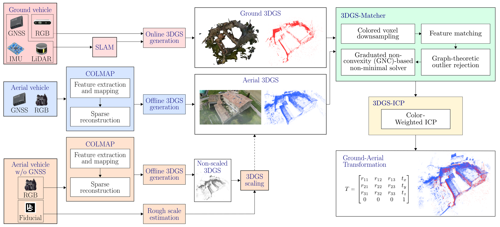
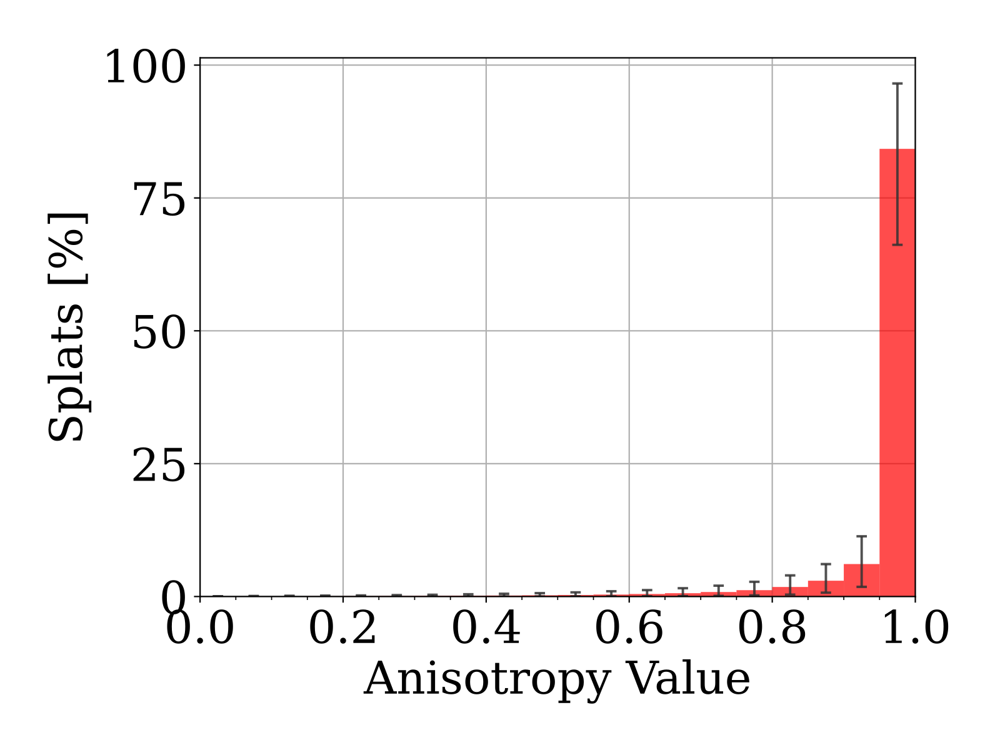
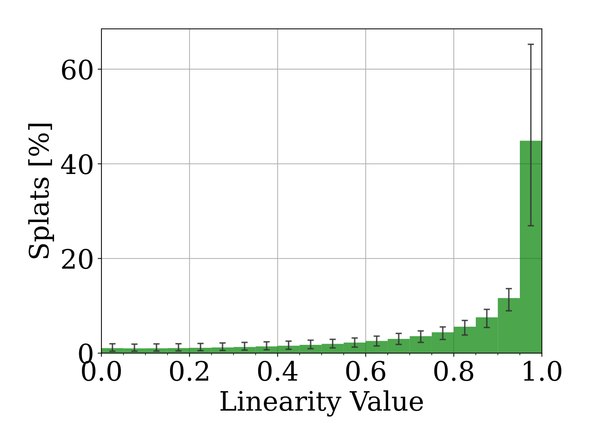
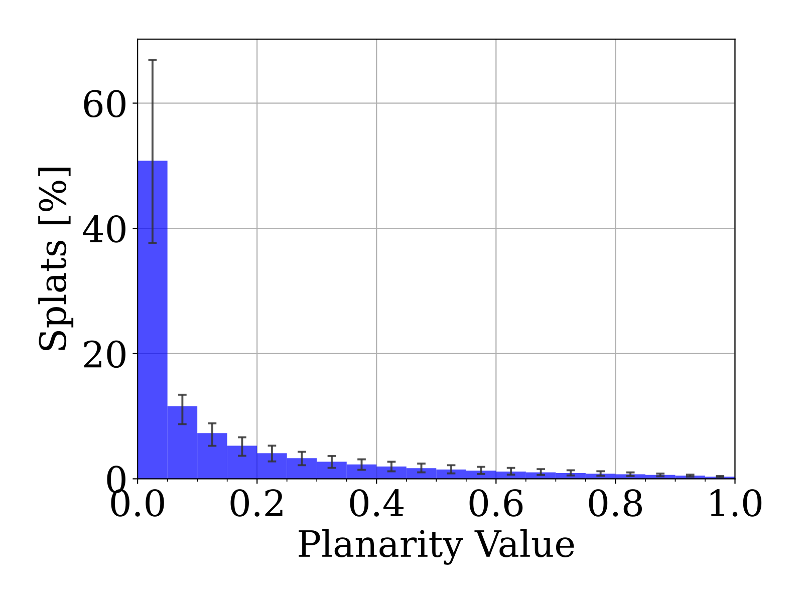
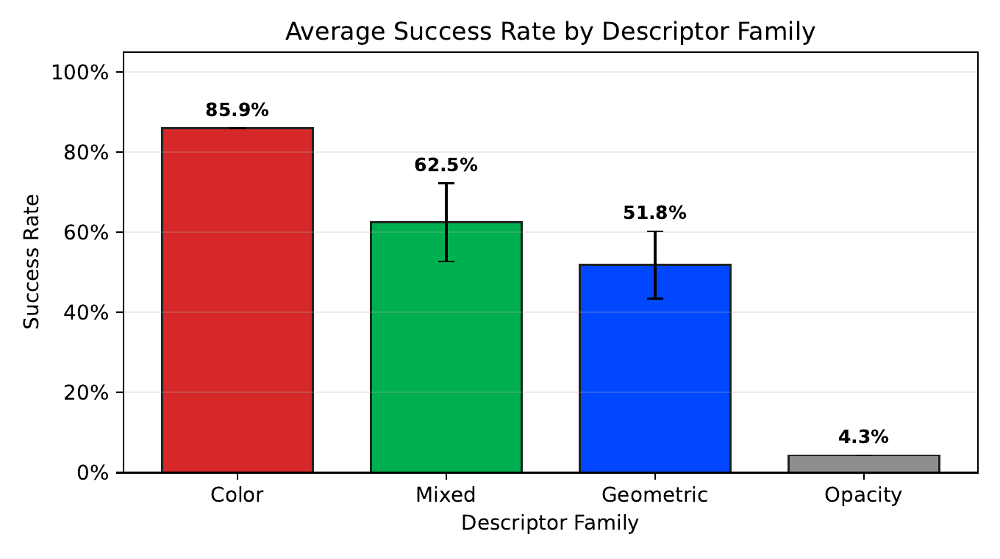

3DGS-Matcher: Revisiting Color-Centric Registration for 3D Gaussian Splats
Abstract
Registering independently built robot maps is essential for map fusion and coordinated navigation. We address this problem for 3D Gaussian Splatting (3DGS), where Gaussians are optimized for rendering rather than geometric fidelity, making their shape a weak matching cue. Instead, we exploit per- primitive color and opacity in a lightweight CPU-only registration pipeline.
The pipeline has two stages. 3DGS-Matcher performs KISS-Matcher-style coarse registration by replacing standard geometric features with ColorPFH, a relative CIELAB color-difference descriptor, and by selecting keypoints through joint space-color voxelization. 3DGS-ICP then refines the pose with a Generalized-ICP variant that down-weights color-inconsistent correspondences, using color to improve alignment while keeping correspondence search purely geometric.
We validate the pipeline through ablation experiments, evaluate it on independently reconstructed halves of the Mip-NeRF 360 scenes and on multi-robot map pairs built from KITTI drives, and demonstrate pairwise cross-platform alignment on a real outdoor aerial-ground dataset.
At the 0.5 m / 5° success threshold, color-aware keypoint selection increases coarse registration success from 45% to 80%, while color-weighted refinement reaches 85%, versus 6% for the geometry-only baseline. These results support color-aware 3DGS registration for heterogeneous multi-robot mapping.
Method

Joint 5D keypoints
Voxelize jointly over position and CIELAB color, so keypoints concentrate where color changes instead of being spread evenly over space.
ColorPFH descriptor
Describe each keypoint by the color differences in its neighborhood, then match with KISS-Matcher's graph-theoretic outlier rejection and GNC solver.
3DGS-ICP
Refine with Generalized-ICP, down-weighting correspondences whose colors disagree. Correspondence search itself stays geometric.
Results
Splat shape is a weak cue
Gaussians are optimized for rendering, not geometry. Across 121 trained maps (162 M splats), most splats are needle-like or flat, so local shape cannot tell them apart.




Robust to appearance and overlap changes
We match two copies of one tramway splat after disrupting one of them. Color matching holds up under global color offsets, noise, outliers and partial overlap.
Beats geometric and learned baselines
Each Mip-NeRF 360 scene is split into two camera halves, and a separate 3DGS map is trained on each. One map starts from a random pose and must be brought back.
Merges maps from different robots
Each robot builds its own 3DGS map from a separate stretch of a KITTI drive. The maps overlap only where the routes meet, sometimes on different days. KISS-Matcher with geometric features fails on every pair.
Aligns aerial and ground maps
Two drone flights and one ground-vehicle drive over the same farmhouse, each turned into its own 3DGS map with different sensors, viewpoints and resolution.
Video Presentation
Poster
BibTeX
This is a placeholder for the BibTeX citation.
If you use this work in your research, please cite it as follows:
@article{albardaner2026_3dgsmatcher,
title={3DGS-Matcher: Revisiting Color-Centric Registration for 3D Gaussian Splats},
author={Jaume Albardaner i Torras and Félix Auger and Frédérick Lanthier and Àngel Santamaria-Navarro},
journal={IEEE Robotics and Automation Letters},
year={2026}
}